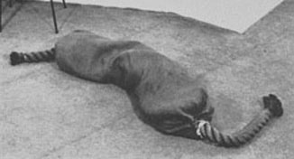

stasis
stasis  mechanics
mechanics  radical
art
radical
art
 stasis
stasis  mechanics
mechanics  radical
art
radical
art
to lie
horizontal sculpture (linear: rolls & pipes)
Joseph Beuys: Ohne Titel, 1961
Barry Flanagan, 1967
Bill Bollinger: Pipe, 1968
Richard Serra:
Slow Roll (for Philip Glass), 1968
horizontal sculpture (linear: beams & rows)
Ben Vautier: Black Box, 1962
Walter de Maria: High Energy Bar, 1966
Robert Morris: Floor Piece (Bench), 1964
Carl Andre: Lever, 1966
Carl Andre: Rackblox, 1998
Kilian Rüthemann: Untitled, 2009
horizontal sculpture (two-dimensional)
Wim T. Schippers: Peanut Butter Floor, 1962
[This photo: Installation in Centraal Museum, Utrecht, 1997]
Carl Andre: 10 x 10 Altstadt Copper Square, 1967
Carl Andre: Equivalent V, 1966
Ulrich Rückriem: Ohne Titel, 1979
Robert Morris: Variant Arrangement, 1966
Ulrich Rückriem: Ohne Titel (Bodenarbeit), 1981
Carl Andre: Steel Inside/Outside Piece, 1970
Ulrich Rückriem: Vierteilung, 1978
Carl Andre: 32 Part
Reciprocal Invention, 1971
Walter de Maria:
Broken Kilometer, 1979
horizontal sculpture (space-filling)
Wim T. Schippers: Salt Room, 1962
(Museum Fodor, Amsterdam)
Wim T. Schippers: Glass Room, 1962
(Museum Fodor, Amsterdam)
Carl Andre: 5 x 20 Altstadt Rectangle, 1967
(Galerie Konrad Fischer, Düsseldorf)
Bill Bollinger:
Graphite Piece, 1969
Robert Morris:
Untitled, 1968
Walter de Maria:
50 Cubic Meters of Dirt, 1968
compiled by remko scha, july 2012

-s.jpg)